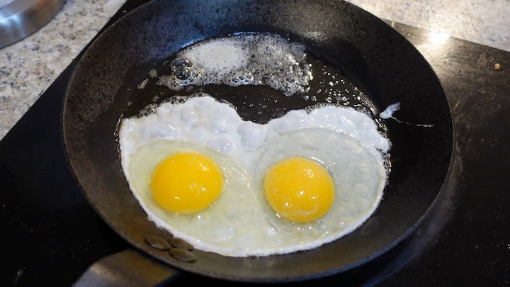

Fried Eggs

Fried eggs are a staple in my house. Also, I'm lazy. As such, I have devised a very lazy way to make
perfect eggs every time.
Ingredients and Equipment
- Two or Three large eggs
- Carbon Steel Skillet
- 1 tbsp butter
- Oven. One that gets hot.
Method
So the basic idea behind this recipe is that you can cook eggs with just carryover heat.
Basically, you're gonna get the pan very hot, then just put the eggs in the hot pan off the heat.
- Put your carbon steel pan in the (cold) oven.
- Preheat your oven to 450 degrees.
- Allow the oven (and pan) to preheat, then wait 30 minutes after it comes to temp. You want this pan
to be very hot.
- In the meantime, prepare a tablespoon of butter and let it sit at room temp to start to soften.
- Break your eggs into a bowl
- Now that your pan is very hot, remove it from the oven. Place it on heat-proof surface. Add the butter,
then the eggs, then put a lid on it and set a timer for 5 minutes
- After 5 minutes, evacuate to a waiting plate and season with salt and pepper. And paprika if
you're cool like me.
- Devour.
Home